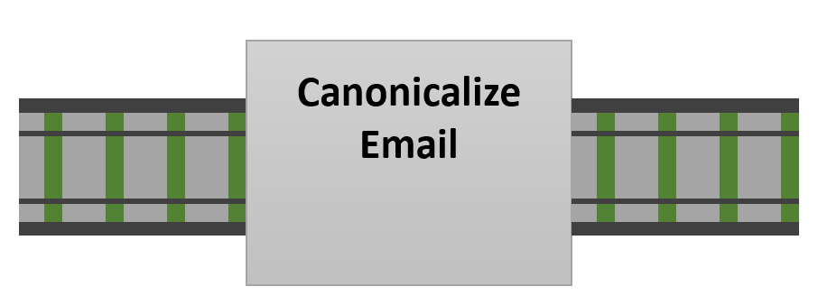
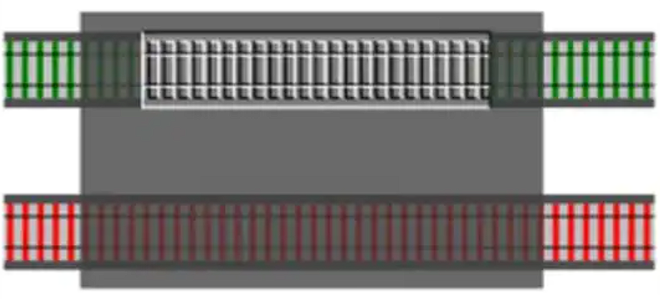
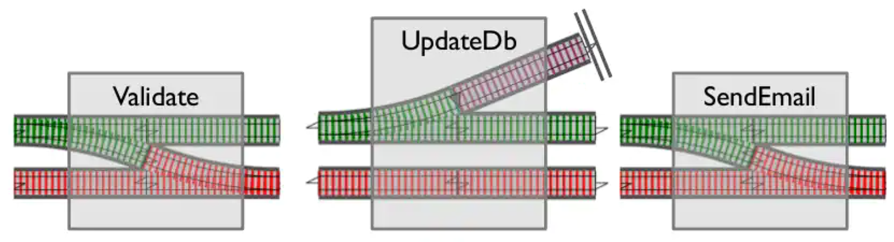

Riding the Rails
Railway-Oriented Programming with F#
Kevin Feasel (@feaselkl)https://csmore.info/on/rop
Who Am I? What Am I Doing Here?


Motivation
My goals in this talk:
- Demonstrate a common programming issue.
- Explain how Railway-Oriented Programming (ROP) resolves this issue.
- Explore the ROP metaphor in detail, with examples.
- Demonstrate examples of handling more complex scenarios with ROP.
A Debt of Honor
I am highly indebted to Scott Wlaschin for coming up with the metaphor of Railway-Oriented Programming and doing such a great job taking us through it.
My understanding of ROP was derived from Scott and I recommend you dive into his work as well at https://fsharpforfunandprofit.com/rop/.
Agenda
- A Simple Example
- Railway-Oriented Programming
- Multi-Output Functions
- Composing Functions
- Incorporating Non-Standard Functions
A Simple Example
As a user, I want to update my name and e-mail address.
- Receive request
- Validate and canonicalize request
- Update existing user record
- Send verification e-mail
- Return result to user
C# Version
F# Version
A Less Simple Example
As a user, I want to update my name and e-mail address and see meaningful error messages on failure.
| Operation | Error Case |
|---|---|
| Receive request | |
| Validate and canonicalize request | Error if name is blank or e-mail address is not valid |
| Update existing user record | Error if user is missing or the database operation fails |
| Send verification e-mail | Error if there is an authorization error or a timeout |
| Return result to user |
C# Version
F# Version
Agenda
- A Simple Example
- Multi-Output Functions
- Railway-Oriented Programming
- Composing Functions
- Incorporating Non-Standard Functions
Visualizing Our Scenario
The "happy path" scenario for our process is straightforward.

Visualizing Our Scenario
As we think about handling errors, however, this gets messy!
Multi-Output Functions
How can this function have multiple outputs?
This works, but think about having hundres of errors. Not sustainable!
Multi-Output Functions
How can this function have multiple outputs?
Much better, but how do we send information back to callers, especially on failure?
Multi-Output Functions
How can this function have multiple outputs?
On success, return a thing. On failure, return an error message.
Domain Primitives
We can move some of the failure checking in F# into the domain model. For example, suppose we lay out common errors:
Domain Primitives
We can also create some simple functions to determine whether we are on the Success or Failure track:
Domain Primitives
These allow us to create domain primitives, domain-level entities which describe facts about our world.
Summarizing the Answer
- A use case is a function.
- A function return a sum type with one of two cases: Success or Failure.
- The use case is built up of smaller functions: steps in a data flow.
- The errors of each step are combined into a single failure path.
...so how do we do it?
Agenda
- A Simple Example
- Multi-Output Functions
- Railway-Oriented Programming
- Composing Functions
- Incorporating Non-Standard Functions
Functions on Rails
Functions on Rails
Wait, What?
Functions on Rails
Validating Inputs
Laying the Track
The metaphor for this is a switch, breaking off into success and failure paths.
Chaining Functions
On success, we continue along the track. On failure, we move down to a separate failure track.
Chaining Functions
For multiple functions, we maintain the two tracks. We can move from success to failure, but not the other way.
Chaining Functions
So how does this work with three functions?
Chaining Functions
The same way that we connect two functions! We can chain together an indefinite number of functions this way.
Chaining Functions
Each operation contains a switch function: stay on the Success path or move to the Failure path.
Agenda
- A Simple Example
- Multi-Output Functions
- Railway-Oriented Programming
- Bypassing Downstream Functions on Error
- Composing Functions
- Incorporating Non-Standard Functions
Composing Functions
Single-track composition is easy.
Composing Functions
Two-track composition is easy.
Composing Functions
But our functions are switches, which are not composable!
Composing Functions
We need some sort of adapter block which transforms our switch into a two-track operation.
Composing Functions
Bind
Bind
Bind
Composing Functions
Composing Functions
Agenda
- A Simple Example
- Multi-Output Functions
- Railway-Oriented Programming
- Bypassing Downstream Functions on Error
- Composing Functions
- Incorporating Non-Standard Functions
Single-Track Functions
Converting Single-Track Functions
Converting Single-Track Functions
This function now composes successfully.
Getting To Two Tracks
This also allows us to start with a non-ROP entity (such as a string from an external caller) and move it onto the rails:
Dead-End Functions
Converting Dead-End Functions
Converting Dead-End Functions
Map + Tee = Composition
Exceptional Functions
When dealing with exceptions, convert them to Failures.
Wrapping Up
Over the course of this talk, we have looked at the Railway-Oriented Programming metaphor for the Either monad. We have seen the basics of implementation, as well as how to solve several common problems with the process.
Be sure to check out Scott Wlaschin's full set of resources at https://fsharpforfunandprofit.com/rop/.
Wrapping Up
To learn more, go here:
https://csmore.info/on/rop
And for help, contact me:
feasel@catallaxyservices.com | @feaselkl
Catallaxy Services consulting:
https://CSmore.info/on/contact